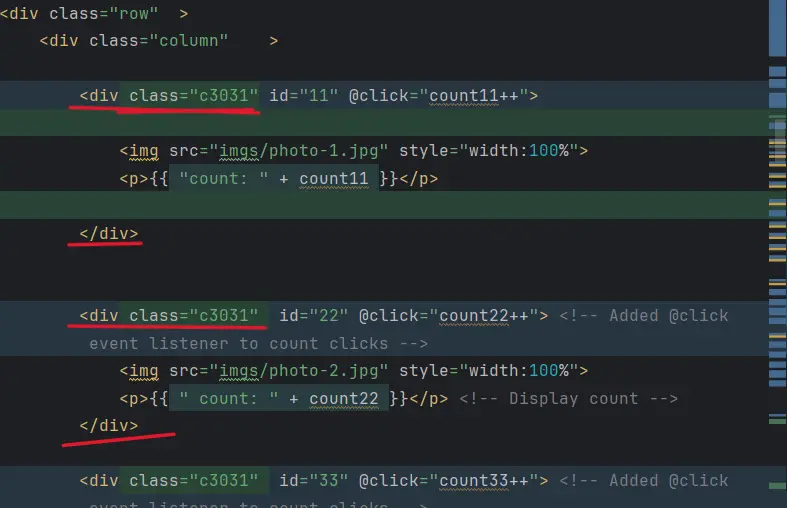
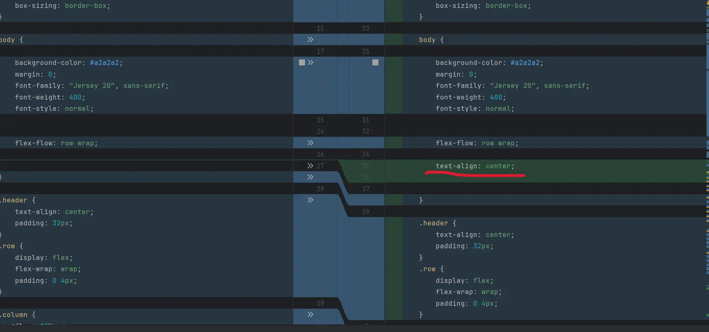

期中考WebMidTermDescriptionOfCorrection 更改說明頁面
題目與需修正內容
Contents which requires to fixed
修改 title 跟 說明
Change the title and description
將標題及內文修改至指定內容
新增一個 2 格column 的 RWD
Add a two column grid of RWD
使用@media (max-width:...px) 來限定視窗大小觸發特定設定比例
如圖視窗大小在900px時,最大寬度為33% 為100的3分之1,因為33%*3近乎100% ,換句話說就是一個容器分三等份
題目說新增一個2個column的RWD(2格響應式容器)
所以藉1個容器為100%,一個容器一分為2等於100%/2=50%,所以設定值設為50%
滑鼠移過去圖片會顯示淡藍色背景(Light blue) ，游標要換成手指，邊框要有圓角
Round the corner and indicates the light blue background color with cursor is pointer while hovering on the picture



在html body 中的img位置上 包上div 並新增class來做容器的標記
新增class 後到css 作細部設定,像是當鼠標移動到該div區域或圖片時所產生或觸發的細節事件
每個圖片下方會有目前點擊數,點擊圖片後，圖片下方的點擊數會增加
Countings will be show below every images which every clicks happened
藉Vue.js 套件 套到div容器裡 ,且每個容器都有特定id 代號 避免重疊,以呼應script裡的function
將 css, js 都拆成獨立檔案
Separate css,javascript from html to individual

將html裡的style 及script 獨立分割出來成外部檔
原始SourceCode碼
期中考原始WebMidTerm頁面
期中考原始碼WebMidTermSourceCode頁面
期中更正WebMidTermCorrectedVersion頁面
期中更正原始碼WebMidTermCorrectedVersionSourceCode頁面
說明WebMidTermDescriptionOfCorrection頁面
說明原始碼WebMidTermDescriptionOfCorrectionSourceCode頁面